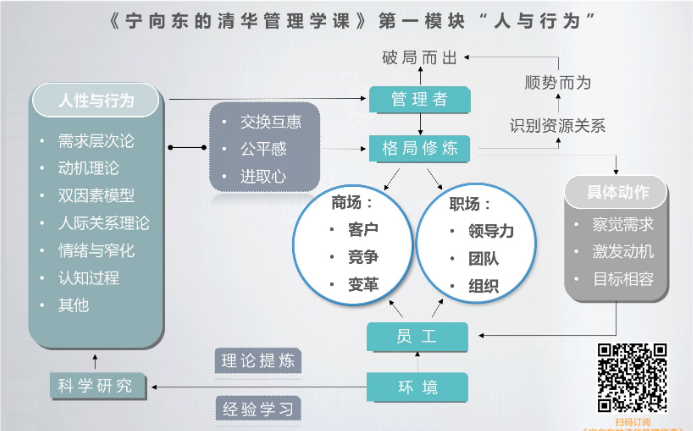
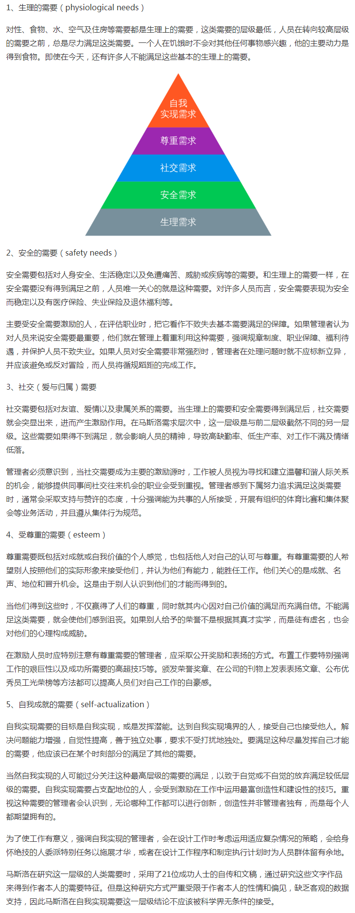

宁向东-管理学课（三）
【第15天： 了解模块核心知识 20200718，周六。】

总结：一切管理的核心：平衡
好文学习：人类思维的优越性到底体现在哪里？——人机大战后的积极心理学思考
作者 彭凯平：
以前的社会达尔文主义、弗洛依德的理论和马克思主义的观点，都非常强调人类的现在和未来是受过去的限制和限定的——社会达尔文主义讲的是过去的演化对我们现在的影响；弗洛依德讲的是人类早期的经历对我们现在的影响；马克思主义讲的是过去的经济条件影响了我们现在的社会意识。但大量的人类行为的研究发现，我们人类的很多行为更大程度上是受到了我们未来的追求、理想、目标和憧憬的影响。
假如人的行为受未来的期望更大一些，那么，人类思维的优越性也许不是它的认知和学习能力，而是它的期望和想象能力。
心理学中自由意志的重要性，其实是建立在对各种不同可能性的期望之上的。我们还发现人类的大脑，最大的作用并不是用来判断过去信息的对或错，而是如何去说服和影响别人。
积极心理学所认为的更好的图灵测试，是假定一个机器如果能够说服我们，那它就真正成为了人。因此，沟通、交流、表达、影响或者说服别人，是我们人类的伟大智能。
越老的人，过去的时间观念越强，更想念过去；越是对生活满意幸福的人，未来的时间观念越强，越憧憬未来；越是有责任感的人，未来的时间观念越强；越是冲动的人，现在的时间观念反而更强。因此，一个人的时间观倾向性是指向自己的过去、现在还是未来，对于我们人的幸福感有很大的影响。
除了在情感、动机、沟通、影响、同情、理解等人性卓越的地方强很多之外，可能我们在认知和思维方面，也有超越人工智能的地方，这就是我们创造、想象、计划、出其不意、不守常规，或者为了感情和理想自我欺骗、诱惑，甚至毁灭。

【第14天： 管理基准|幸福感？进取心？20200716，周四。】
一.新的理念就是：管理工作的目标，应该基于员工的 “ 进取心 ” ，而不是直接瞄准 “ 幸福感 ” 。为什么呢？因为“进取心”是管理活动的源头，而“幸福感”，则是管理活动的结果。管理工作，应该看重源头，而不是结果。这是其中一个原因，还有一个更重要的原因是，“幸福感”靠不住。
二.什么是幸福感？
幸福感是一种自我比较。如果一个人感到幸福，他的现状一定是比过去的状况好，也就是说是改善，跟过去的自我比要好。如果这个话成立，那么，怎么才能让一个人的幸福感不断增加呢？一旦你的幸福感达到一个峰值，后面的幸福水平如果低于这个峰值，其实你的感受是黯然失色的。
幸福感还涉及到人和人之间的比较。自己变好，很多时候不重要，重要的是，别人一定不能比自己好，这样才更有幸福感。如果大家一块变好，人们往往不会获得应有的幸福感。还记得昨天的课，我跟你说的那位朋友吗？当薪酬改革之后，事实上，他的收入增加了一大块，本来应该是很高兴很有幸福感的事。但是，当他知道旁边的同事收入比他要高一点点的时候，他的幸福感立刻烟消云散，剩下的只有不满。
总结：建立管理制度、运用管理手段，如果过多地考虑所谓的 “ 幸福感 ” ，可能会走到另外一个误区。这个尺度，是管理者需要格外注意和拿捏的。
三.什么是进取心？
弗里斯把 “ 进取心 ” 定义为 “ 一种自我启动的工作行为 ” ，员工可以在这种“进取心”下发挥主观能动性，积极主动地克服困难。
总结：建立一个能够激发人的“进取心”的管理框架，增加员工在企业工作流程中的参与程度。这样的管理不怕变化，遇到问题，每当有新情况的时候，员工的进取心会让他们努力地去寻求改变，而不是被动地报告和消极地等待。
如果把 “ 进取心 ” 作为管理体系的一个部分，员工本人高度参与到任务的 “ 重新定义 ” 过程中，那这个组织就不得了。以前的课，我们说过，要注意让有愿望又有能力的人，把个人目标与组织目标一致化。注意激发这些人的“进取心”，是一个重要的手段。
【第13天：公平感|领导者的内功 20200715，周三。】
一.我们在管理工作中，在解决薪酬安排、晋升安排中，一定要注意：你怎么做，才能为组织创造出更多的公平感。
二.下属公平感的类型及成因
人们把组织公平感分为三类：分配公平感、程序公平感和互动公平感。
分配公平是指组织资源在员工之间的公平分配。美国著名心理学家亚当斯，于1965年提出了著名的公平理论。他认为，人们关注的不是自身得到的结果的绝对程度，而是关注结果是否相对公平。后来一些学者进一步发展了亚当斯的公平理论。研究表明，不同的组织目标（是追求团队和谐，还是追求效率最大化）、不同的个人动机（是利己主义，还是利他主义）都能够影响不同的分配规则。归纳起来，目前学者们认为有几个原则对分配公平起着至关重要的作用。
公平原则。公平就是员工对组织的贡献和所得到的回报应当是一致的。
平等规则。平等就是同样对待所有人。
需要原则。需要是指组织资源的效价对员工公平感的建立具有重大影响，即员工越需要的东西，对他们的分配公平感越有影响。
权力原则。具有较高地位、权威和控制力的人应当获得较多的资源。
责任原则。比如，那些承担较大责任和风险的人，应当拿到较高的薪酬
【第12天：修炼格局|当骨干来辞职 20200714，周二。】
一.什么是格局：“局”是人和各种资源之间的相互关系。所以， “ 格局 ” 这两个字摆在我面前，就是把各种资源之间的关系都看透的意思。大格局，就是看到最透。把事情如果看到最透，就不会为一些细节所困扰，中国人把这叫做“想开了”，想开了，你自然就有了大器量，有了宽广的胸怀。
二.当下属来辞职：站在下属的立场上去考虑问题，然后跟他谈话。
我们要想：
他为什么会辞职？
是不是不可逆转？
只有换位思考才能看清楚。只有认识清楚了，才能做出最有包容力的行动，让自己的格局得到提升。
思考：“忍”可以锻炼你的格局。“戒急用忍”的好处，是会让人变得冷静。当你不觉得自己是在 “ 忍 ” 的时候，你就会顺应事物发展的本来逻辑，就有了大格局。
将来年轻人更换工作更加频繁的趋势，这个趋势是没有人可以否认的事实。所以，我们就有必要提前掌握一些应对这种情况的管理能力。
对于一个管理者来说， “ 格局影响观念，观念决定招法，而招法会决定结果 ” 。只有格局够大，才能真正驾驭员工不断更换，离职情况频繁发生的局面。
案例学习：

【第11天：经验分享 20200712，周日。】
1.在哈佛看来，管理学根本没有一定之规，管理学的学习主要是经验分享。其实，商业世界只有问题，没有理论。很多问题的答案都蕴含在经验里，而不是理论里。
2.真正的财务功夫，其实在财务的后面”。好的财务人员，他的本事就是能够透过财务数字看到一线市场上的硝烟。
3.哈佛教授的任务是提好问题，逐级引导，然后进行点评。我觉得如果作为领导者我也是一样的：要学会引导新人。
4.经验的学习方法：问、想、仿、改、善。
问：尽可能地去了解跟这个经验有关的种种细节。因为细节越多越详细，越有助于我们判断这个经验或者这个好做法的适用条件，看它是不是适合你现在所处的情况、所要解决的问题。
想：注意试着用几句话、几个词来概括出别人经验的样貌。想的目的，就是要在你的头脑中，尽可能地提炼出某一个做法，或者经验的核心特征，找到隐藏在这个特征背后的逻辑。
仿：所有的经验学习都是从模仿开始的。很多模仿，最开始都是学不像的，因为毕竟还是人家的东西，所以，要有足够的细心和耐心，注意修正，注意调整。
改：在别人的模板上增加一些你自己认为必要的因素，减少一些不必要的因素，使得这个经验变成你的东西。
善：当你看到你通过模仿他人的东西，来解决你的问题，取得了效果之后，其实你就进入到了一个更高的境界——完善的境界。因为完善的目标就是形成一个新的更加简化的适合你自己使用的经验模板。
总结：
第一， 没有理论和方法是过时的，所有的理论都有它可信、有参考价值的要素。我们要注意思考一个理论产生的背景、成立的前提条件，要利用那些有价值的要素。
第二， 目前这个阶段没有理论和方法可以包治百病，解决所有的问题，所以我们遇到问题要学会拆解，然后用不同的招法去有针对性地解决问题。
第三， 与理论学习相比，更重要的是你要对自己所面临的问题进行分解，找出解决问题的逻辑和路径，因为管理工作就是一连串的应用题。
第四， 注意经验借鉴。经验借鉴是管理者的主要工作，也是重要能力。在这个方面，利用“问、想、仿、改、善”的五字原则。
【第10天：窄化效应|离职率居高不下的原因 20200711，周六。】
一. 什么是“窄化效应”：“ 窄化效应 ” ，就是偏好出了问题，因为他只关注了某一个时刻某一个点的偏好。（一个人和另外一个人在办公室，为了工作上的事情，几句话不顺，大吵了一架，第二天冷静下来想想，真是不应该，于是又互相道歉。可当时为什么大吵一架呢？同样也是因为“窄化效应”。因为在吵架的瞬间，他们心中的短期偏好都出了问题。）
注意：当我们注意到一个人不断处于窄化的过程中，我们要避免一些事情发生。比如，这个时候就特别不适合进行沟通交流。
因为管理者要学会驾驭人心，必须首先要了解每个人的生理状况。切记不要在别人特别愤怒的时候去批评他。你管理别人，不是要给自己创造一个仇人，而是要争取获得一个自己的好同事。
二. 解决加班严重问题：
1.应该建立起一种新型的加班文化：要想完全抵制加班，我觉得不太可能。因为加班已经是一个全球的现象，美国、欧洲、日本都存在着加班。那么，关键是如何把加班的尺度掌握在一个不至于让员工的体内因素不可控的程度。
2.应该以组织为单位来进行时间预算和时间管理：因为不从公司总体上进行综合治理，单靠个人去搞时间管理技术的改善，效果是会大打折扣的，甚至最严重的情况会出现“鞭打快牛”的现象，导致组织中的骨干流失得非常严重。
【第9天： 双因数管理|如何管理新一代年轻人 20200710，周五。】
一. ：要想带出一个好的团队，不能仅仅靠保健因素，一定要依赖激励因素，使员工对工作产生正面的情感。
工作需求：
1.第一类，就是为了满足衣食住行这些基本需求。工作场所的条件过得去，组织给员工提供了必要的环境，然后人际关系也过得去，这个在管理学上就被称为“保健因素”。
2.就是自我实现和受到尊重的需求，这是第二类需求。薪资福利是不是比别人高？职位升迁的通道是不是比较顺畅？一个人能不能在社会上获得面子、成就感和满足感？这些因素就是“激励因素”。
二.新一代年轻人的特点
1.生活环境因素：生活在一切都变的环境下，“基于长期关系的心理契约，它是不牢固的。所以，我们更容易作出变化和放弃的决定”，而且现在选择的机会也多了，对于年轻人来说，放弃不一定意味着失业，可能意味着更好的发展机会。
2.我觉得管理者现在要做的，恰恰是要设身处地地去了解这代人、理解这代人，然后你才有资格去谈怎么管理这代人。任何人都无法改变这一代人，也绝不可能把他们带回到过去。当高铁列车加速启动的时候，车主要是依附于轨道；但是，当列车达到高速的时候，轨道的设计就必须要考虑列车的方向”。
三.管理新一代年轻人的建议
1.给任务的时候一定要明确。（管理者要能够相对清晰地提出问题，而不是大而化之地给人家一个工作方向。当然，有些工作一定是探索性的，但你事先必须要考虑清楚年轻人的经验和能力，判断这个工作是不是他可以胜任的。坦率地说，有些工作就是我们亲自干，都不知道怎么干，这种情况下，你交给一个年轻人就应该有一种包容的心态，多花时间和他沟通讨论。同时，要善于安排一些能够指导年轻人的有经验的中层，必要时给予帮助和辅导。这里面就需要非常有耐心，这个是心态上的准备。）
2.要善于定好小目标，这是方法层面的建议。管理者要善于把大目标分解成中目标和小目标。要让年轻人像玩游戏一样闯关似的完成工作任务，在这个过程中，帮助他们建立自信和能力。（我曾访问过一个公司，他们对年轻人的管理，有点像搞游戏竞赛，目标清晰，奖金差距大，公开透明，大奖大罚，充分调动了年轻人的好胜心。这个方法很值得大家思考。）
3.一定要给年轻人即时反馈。
4.不要吝啬鼓励。当年轻人取得了阶段性的成果，一定要给予及时肯定，适当地要给予表扬。
总结语：时代变了，在未来的工作中，心态宽容、善于鼓励别人，同时又能够巧妙地维护原则，这样的领导者，比那些只知道高标准、严要求的领导者，会有更大的成就。
【第8天：愿望与能力|了解他人的两条线索 20200709，周四。】
一.动机理论：任何人在工作中的业绩表现，都可以归因于两样东西：一是能力，二是愿望。要想把工作做得出色，这两条缺一不可。
二.当一种需求成为人采取某种行为的决定因素的时候，这种需求，就是动机。所以，我们要管理他人，其实是我们要善于透过行为的表象，试着找出他们采取相应行为的动机。
三.有三种动机比较常见，知道这三种动机，对于你了解他人特别重要
1.“获得成就的动机”。
2.“获得权力的动机”。细分成“个人性的权力动机”和“社会性的权力动机”
3.“获得归属感的动机”。
每个人都是多种动机的结合体，而且，他的动机是跟环境有关的。环境合适，这个动机就会成为一个愿望，这就是管理者可以利用的地方。现在我们讲管理他人，我建议你要善于观察和判断每一个下属的动机，用各种方法帮助他们去建立和形成愿望。
“ 从动机到愿望，从愿望到努力，再从努力到目标 ” 的这样一个逻辑，这个逻辑其实就是管理的逻辑。
四.愿望能力模型：团队中的每一位成员，不仅要了解自己上司的想法，最好还要了解上司的上司的想法。而对于上司，不仅要了解下级，最好还要了解下级的下级的想法。
【第7天： 状态自尊|管理他人的切入点 20200708，周三。】
一.概念：“状态自尊”：学者把自尊定义为一种情绪状态，也就是说它是由好的结果，或坏的结果刺激出来的一种感受。到了90年代，学者们开始把这种自尊明确地定义为“状态自尊”。
二.管理他人，最高明的应该是基于每个人 “ 状态自尊 ” 的基础上去建立管理架构。讲管理者需要理解他人的情绪，在了解“状态自尊”的前提下去进行有效的管理。如果积极情绪增加的同时，消极的情绪是在下降的，员工就会冲破他们自己固有的工作角色，更多地关注工作环境和他们的工作同伴。表现出来的行为就是更多地帮助同事，做出自愿加班等超越自我的工作行为。
三.马斯洛提出的“层次需要理论”：马斯洛认为，人的需求分成五个层次，从生理需求到安全需求到社会交往的需求，再到受到尊重的需求以及自我实现的需求。这套理论是人际关系学派的重要思想基础。职场上的绝大多数人所追求的，主要是受到尊重的需求和自我实现的需求。
四.有效的管理者的一个重要法宝就是：在充分尊重员工感受的情况下来建立管理制度，通过一些管理工具，让员工的自身努力和上级的有效管理之间形成平衡。
要让员工主动分享领导的角色，在这个基础上，领导者再去保持权威；
要给予员工发挥主动性的天地，在这个基础上，领导者再去控制达成目标的节奏；
要在员工具有足够操作弹性的前提下，管理者再去建立标准化的程序
作为领导者在获得万众拥戴的同时，也要允许别人分享鲜花和掌声.
五.真正的管理，应该是努力帮助他人改变工作情境、创造好的情绪、激发员工的动力，控制员工的惰性。
建议管理者要从骨子里相信 “ 状态自尊 ” 的力量，并把它作为一个追求的目标。
【第6天： 诚惶诚恐，保持敬畏 20200707，周二。】
1.我们首要的任务是要让我们自己积极起来，这样才能更好地带动身边的人。
2.先认清自己的优缺点：把关注点先放回到自己身上，了解了自己，然后，再去学习如何处理与不同类型的人之间的关系，在这个基础上再去考虑领导别人、组建团队，处理业务，再去考虑所谓的“破局”。
3.我们不能把自己搞得那么累，生命的旅程是一场马拉松，要享受这个过程中的每一点美好，要平衡工作和生活。
4.世界上人与人是不一样的，不能用同一套方法管理所有人。
5.团队运营中，适当地运用“人格特质”可以事半功倍。内控性的人需要适当的授权和赋能；外控性的人是很优秀的执行者，列出具体的关键人物或步骤，他们应该会很漂亮地完成。如何扬长补短是团队建设的关键，毕竟团队需要差异化
6.爱因斯坦说，自己掌握的知识就是圆的内部，圆的外面是未知世界，当圆越扩越大，才明白自己不知道东西越多。
7.
【第5天： 认知能量|减少心力的流失 20200706，周一。】
一.认知能量。什么是认知能量呢？就是当我们注意到一件事情，对它进行分析、判断，乃至于记忆的时候，都是需要花费心力的。认知能量，通俗来理解，就是“心力”。人的心力是有限的，所以，我们会下意识地节省心力，心理学家创造了一个词叫 “ 认知吝啬 ”
二.两个方面锻炼你的心力：
就是要把你的电池容量在原有的基础上尽可能地增大。
也是更重要的一点，是要学习怎么样去使用它，让它的使用效率变得更高。
三.集中精力处理最重要的信息，在最重要的事情上涉入够深是必要的，你要学会作这样的选择。
聪明人只在最重要的事情上不放弃、不轻率，反复权衡，不怕浪费心力，而在那些小事情上，并不是太计较，这其实就是我们本能地在进行成本和收益的比较。
乔布斯只穿一种黑色套头衫和牛仔裤，不是因为他觉得这样酷，而是为了给大家留下一个一致性的印象，更重要的是他认为，这样做可以最大程度地节省他的心力。
四.关于“冥想”“专注于思考”
1.乔布斯多年来一直坚持禅修，提高自己的心力
2.美国的很多公司都通过这种类似于冥想式的“正念减压”训练来提高员工专注力。研究表明：长期进行减压训练的人，脑部结构确实会发生变化，专注力也确实会得到提升。
五.作为管理者：
1.请你留意一下，你有多少时间是处于一种专注状态的？什么是专注状态呢？就是不知不觉中，你突然发现“怎么就到了吃饭的时间了”。接下来，你再评估一下自己经常会在什么事情上处于这样的状态？处于这样的状态的事情是不是很有意义？是不是在工作？而你处于这种状态的时候，经常会被什么样的事情打断？
2.给自己找一个环境，让自己能够在指定时间里、在这个环境中完成特定的任务。
3.理者要格外注意：尽量减少员工被打断的情况。如果工作过程中间不断被打断，就需要不断地重新启动。这个过程如果反反复复，人的心力使用效率，就会像一个锯齿状一样忽上忽下，而不是维持在一个较高的水平，这就有点像堵车时候的汽车，一脚油门一脚刹车，实际上是最费油的。所以，管理者一定要熟悉这个规律，尽量为员工创造一个不经常被打断的工作环境。
经验分享：

【第4天： 20200705，周日。】
一. 情绪管理：以前你可能会以为管理中最重要的任务是决策，而决策又要靠所谓的“理性”，但今天我要告诉你的是，情绪才是决策过程中的主角。
二. 心理学的不断发展：笛卡尔最核心的观念（本质上是机械主义的，是理性主义的）是，他把人分成了心理系统和身体系统两个独立的系统。心理系统管思考，身体系统管行动。身体系统不参与思考，只接受心理系统的指挥。
达马西奥。1994年，他出版了一本书——《笛卡尔的错误》：情绪与决策如影随形，人是不能脱离情绪，来进行所谓理性决策的，人的所有决策，都是情绪参与的结果。
三. 情绪管理的本质: 就是要控制自己产生好情绪和产生坏情绪的比例。
总结：管理上要格外注意员工的情绪：管理者需要格外注意：情绪，才是第一生产力。管理者首先需要把自己的情绪变得更加积极，同时还要学会有意识地将这种情绪传递给员工。
一个人情绪差的时候，他的工作表现一定差；而一个人情绪饱满的时候，他的创造力一定超强。这一点我个人深有感触：好比前段时间我提出离职的事情期间，一度自己的情绪低落，工作没有积极性！
【第3天：达克效应|自视清高与倾家荡产 20200704，周六。】
一. 达克效应：你并没有你想的那么优秀
什么是达克效应呢？简单点说，就是我们平常所说的“自我感觉良好”、“无知者无畏”，或者“自视甚高”，而在学术上，“达克效应”的定义是：能力越低的人，越容易产生对自己过高的评价，至少会把自己的能力评价在平均水平以上；而能力较高的人，则会倾向于低估自己的能力。
二.现象1：每个人在自己相对比较低能的领域里，对别人的真正能力是缺少信息的，因为你能力低，你就不容易了解比你能力高的人，所以很多别人厉害的地方你也认识不到，而且进行评价时，最容易唤起的往往是你的长项，而你去比较的是别人的短项，这么一比就容易比出自信。
现象2：按照大心理学家阿德勒的说法，有强烈自卑感的人容易从其它方面来证明自己的优越，从而获得“补偿” 。阿德勒甚至发现有些人会因此产生出一种叫做“优越情节”的东西，这些人会格外重视获得“优越地位”的感受。优越情节，就变成了这位老兄的眼罩，让他自己无法辨识出自己的情商其实是很低的。
总结：智力、努力和情商能力就变成了一种综合能力。
了解自己的重要性，一点都不亚于经常看看业绩报告单，因为做人远远重于做事，做人的功夫就在于是否能在别人心目中建立起良好印象。做人，更能决定人这一生远行的距离。
【第2天：人格特质|你有却不自知的优势 20200703，周五。】
感悟：深入了解自己的人格特性更有助于进行工作处理、职业发展规划、对下属的工作指导等！
一. 了解自己的人格特质，选择特定的管理方式，选择特定的工作，有助于你扬长避短，把本能的东西做到极致。
1.有内控性特质的人一旦对工作内容、工作方式、对同事，甚至是对上级不满意，他们就会不加隐晦地去努力改变这一切，他们有时甚至会声称自己要离职，但他们的离职意愿似乎不一定会转化成离职行动，这一点，有统计数据来支持。但是，在他改变周围环境的过程中，往往会得罪很多人，即使没有离职，后边的日子一般也不好过。
2.有内控性特质的人，大多喜欢凭本事吃饭，他们的天性决定他们不太注意维系同事关系。所以，这种人在遇到问题时，如果能够及时关闭“本能”回路、开启“思考”回路，注意他人的感受，也就是说他改变周围环境的时候，不要有意地去得罪那么多人，那就厉害了。
3.一旦内控性特质的人对于薪酬和晋升有所不满的时候，他们将离职意愿转化成离职行动的比例就会特别高，这也有统计上的证据支持，所以如果你是领导就要请你注意，这些内控性特质的人往往都是主动离职，而不是像外控性特质的人，总是等领导谈话之后，才接受被裁掉的现实。
【第1天： BMTI测试|认识自己是一切管理的前提 20200702，周四。】
一. 在别人眼里你是一个什么样的人？你首先需要认清的就是自己是个什么样的人，而且你要和周边的人形成有效的管理关系，因此你需要知道的是，在别人眼里你是个什么样的人，所以认识自己不是你觉得你是什么样的人，而是别人眼里你是个什么样的人。
二. 实际上人们发展得越成熟，就越能够在充分掌握偏好区域能力的基础上，不断使用那些非偏好区域的能力和特质，但是非偏好的特质并不能替代原始的偏好特质。
反思：因为很多时候，一件事在我们手上做得七扭八歪，问题根本不在别人，就在我们自己。但是我们的本能常常不由自主地会让我们去找别人的问题，去找客观原因，而很少会花力气反思自己，即使反思了，往往也不够深刻，很多时候避重就轻，没办法，这就是人的局限性。